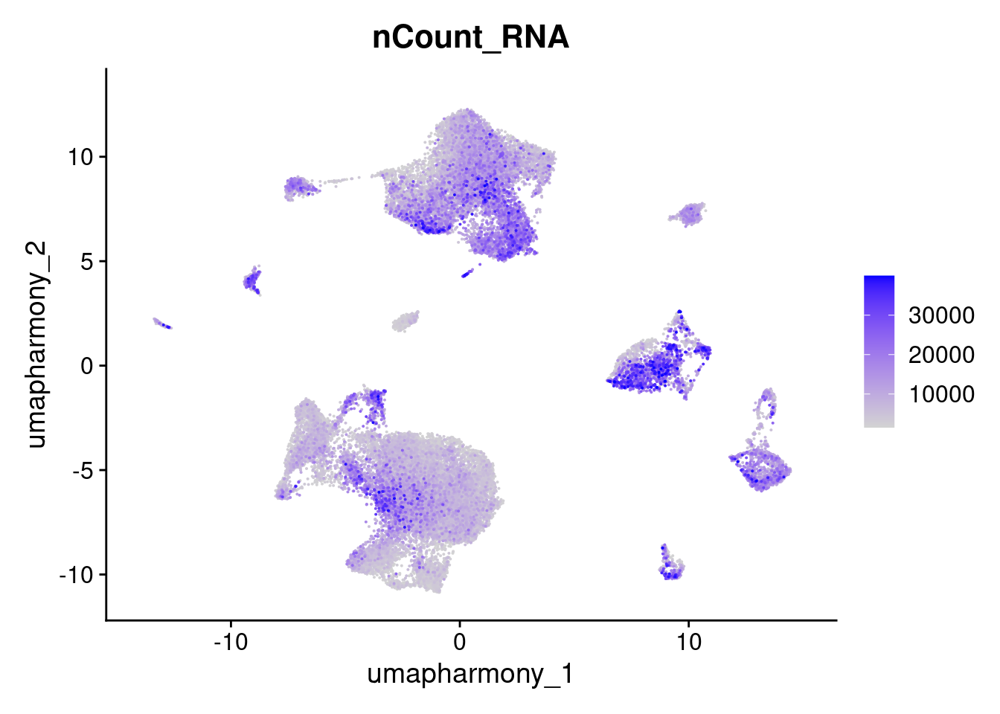

# Load libraries
library(data.table)
library(devtools)
library(presto)
library(BiocParallel)
library(glmGamPoi)
library(sctransform)
library(Seurat)
library(tidyverse)
library(miQC)
library(SeuratWrappers)
library(flexmix)
library(SingleCellExperiment)
library(SummarizedExperiment)
library(readxl)
library(fishpond)
library(Matrix)
library(speckle)
library(scater)
library(patchwork)
library(vctrs)
library(alevinQC)
library(harmony)
library(scDblFinder)
library(cellXY)
# Set global options for Seurat v5 objects
options(Seurat.object.assay.version = 'v5')2 Skin: Normalization, doublet discrimination, integration, clustering
2.1 Set up Seurat workspace
2.2 Load previously saved object
merged.18279.skin <- readRDS("Skin_scRNA_Part1.rds")2.3 Normalize and scale data
Regress out mitochondrial contribution
merged.18279.skin <- NormalizeData(merged.18279.skin)
merged.18279.skin <- FindVariableFeatures(merged.18279.skin,
assay="RNA",
layer="data",
selection.method = "vst",
nfeatures = 5000)
merged.18279.skin <- ScaleData(merged.18279.skin, vars.to.regress = "percent.mt")2.4 Run PCA
merged.18279.skin <- RunPCA(merged.18279.skin, npcs = 200, verbose = FALSE)
ElbowPlot(merged.18279.skin, ndims = 200, reduction = "pca")2.5 Plot unintegrated UMAP
merged.18279.skin <- RunUMAP(merged.18279.skin,
reduction = "pca",
dims = 1:50,
reduction.name = "umap.unintegrated")Warning: The default method for RunUMAP has changed from calling Python UMAP via reticulate to the R-native UWOT using the cosine metric
To use Python UMAP via reticulate, set umap.method to 'umap-learn' and metric to 'correlation'
This message will be shown once per session15:12:49 UMAP embedding parameters a = 0.9922 b = 1.112Found more than one class "dist" in cache; using the first, from namespace 'BiocGenerics'Also defined by 'spam'15:12:49 Read 46891 rows and found 50 numeric columns15:12:49 Using Annoy for neighbor search, n_neighbors = 30Found more than one class "dist" in cache; using the first, from namespace 'BiocGenerics'Also defined by 'spam'15:12:49 Building Annoy index with metric = cosine, n_trees = 500% 10 20 30 40 50 60 70 80 90 100%[----|----|----|----|----|----|----|----|----|----|**************************************************|
15:13:05 Writing NN index file to temp file /tmp/Rtmp5cppMq/file39fc2036ef469f
15:13:05 Searching Annoy index using 1 thread, search_k = 3000
15:13:27 Annoy recall = 100%
15:13:28 Commencing smooth kNN distance calibration using 1 thread with target n_neighbors = 30
15:13:33 Initializing from normalized Laplacian + noise (using RSpectra)
15:13:38 Commencing optimization for 200 epochs, with 2042658 positive edges
15:14:13 Optimization finishedDimPlot(merged.18279.skin, reduction = "umap.unintegrated", group.by = c("Site", "Patient", "Timepoint"))2.6 Call preliminary clusters for the purposes of doublet discrimination
merged.18279.skin <- FindNeighbors(merged.18279.skin, dims = 1:50, reduction = "pca")Computing nearest neighbor graphComputing SNNmerged.18279.skin <- FindClusters(merged.18279.skin,
resolution = 0.4,
algorithm = 2)Modularity Optimizer version 1.3.0 by Ludo Waltman and Nees Jan van Eck
Number of nodes: 46891
Number of edges: 1576348
Running Louvain algorithm with multilevel refinement...
Maximum modularity in 10 random starts: 0.9313
Number of communities: 22
Elapsed time: 13 secondsDimPlot(merged.18279.skin, reduction = "umap.unintegrated", label = T)2.7 Identify and remove doublets
This uses raw counts as input
2.7.1 Combine RNA layers
merged.18279.skin[['RNA']] <- JoinLayers(merged.18279.skin[['RNA']])2.7.2 Convert seurat to sce and check colData
merged.18279.skin.sce <- as.SingleCellExperiment(merged.18279.skin, assay = "RNA")
merged.18279.skin.sceclass: SingleCellExperiment
dim: 61217 46891
metadata(0):
assays(2): counts logcounts
rownames(61217): 5-8S-rRNA 5S-rRNA ... ZZEF1 ZZZ3
rowData names(0):
colnames(46891): P101_Skin_Pre3rd_2.5mgIpi_RNA_AAACCTGCACCATGTA
P101_Skin_Pre3rd_2.5mgIpi_RNA_CACATAGCAGGCTCAC ...
P111_Skin_Post3rd_5mgIpi_RNA_TGGCCACCAGGCTGAA
P111_Skin_Post3rd_5mgIpi_RNA_TGAGCCGAGACGCGTT
colData names(15): orig.ident nCount_RNA ... seurat_clusters ident
reducedDimNames(2): PCA UMAP.UNINTEGRATED
mainExpName: RNA
altExpNames(0):colData(merged.18279.skin.sce)DataFrame with 46891 rows and 15 columns
orig.ident nCount_RNA
<character> <numeric>
P101_Skin_Pre3rd_2.5mgIpi_RNA_AAACCTGCACCATGTA SeuratProject 26987.6
P101_Skin_Pre3rd_2.5mgIpi_RNA_CACATAGCAGGCTCAC SeuratProject 26321.6
P101_Skin_Pre3rd_2.5mgIpi_RNA_GCACATAAGTGCCATT SeuratProject 29916.6
P101_Skin_Pre3rd_2.5mgIpi_RNA_TTAGTTCAGCACCGTC SeuratProject 28724.6
P101_Skin_Pre3rd_2.5mgIpi_RNA_GGAACTTGTCGCGGTT SeuratProject 25775.8
... ... ...
P111_Skin_Post3rd_5mgIpi_RNA_CAGGTGCGTCGCTTTA SeuratProject 532
P111_Skin_Post3rd_5mgIpi_RNA_GTCACGACACATTTCT SeuratProject 502
P111_Skin_Post3rd_5mgIpi_RNA_GAGACCTAGGGTCTCC SeuratProject 618
P111_Skin_Post3rd_5mgIpi_RNA_TGGCCACCAGGCTGAA SeuratProject 508
P111_Skin_Post3rd_5mgIpi_RNA_TGAGCCGAGACGCGTT SeuratProject 511
nFeature_RNA percent.mt
<integer> <numeric>
P101_Skin_Pre3rd_2.5mgIpi_RNA_AAACCTGCACCATGTA 5591 3.39147
P101_Skin_Pre3rd_2.5mgIpi_RNA_CACATAGCAGGCTCAC 5500 3.17440
P101_Skin_Pre3rd_2.5mgIpi_RNA_GCACATAAGTGCCATT 6213 6.09781
P101_Skin_Pre3rd_2.5mgIpi_RNA_TTAGTTCAGCACCGTC 5440 4.31684
P101_Skin_Pre3rd_2.5mgIpi_RNA_GGAACTTGTCGCGGTT 4171 2.80602
... ... ...
P111_Skin_Post3rd_5mgIpi_RNA_CAGGTGCGTCGCTTTA 423 1.879699
P111_Skin_Post3rd_5mgIpi_RNA_GTCACGACACATTTCT 484 0.796813
P111_Skin_Post3rd_5mgIpi_RNA_GAGACCTAGGGTCTCC 508 1.941748
P111_Skin_Post3rd_5mgIpi_RNA_TGGCCACCAGGCTGAA 452 1.279528
P111_Skin_Post3rd_5mgIpi_RNA_TGAGCCGAGACGCGTT 386 0.391389
miQC.probability miQC.keep
<numeric> <character>
P101_Skin_Pre3rd_2.5mgIpi_RNA_AAACCTGCACCATGTA 0.0454933 keep
P101_Skin_Pre3rd_2.5mgIpi_RNA_CACATAGCAGGCTCAC 0.0462136 keep
P101_Skin_Pre3rd_2.5mgIpi_RNA_GCACATAAGTGCCATT 0.0893537 keep
P101_Skin_Pre3rd_2.5mgIpi_RNA_TTAGTTCAGCACCGTC 0.0520042 keep
P101_Skin_Pre3rd_2.5mgIpi_RNA_GGAACTTGTCGCGGTT 0.0498276 keep
... ... ...
P111_Skin_Post3rd_5mgIpi_RNA_CAGGTGCGTCGCTTTA 0.0148312 keep
P111_Skin_Post3rd_5mgIpi_RNA_GTCACGACACATTTCT 0.0225911 keep
P111_Skin_Post3rd_5mgIpi_RNA_GAGACCTAGGGTCTCC 0.0154750 keep
P111_Skin_Post3rd_5mgIpi_RNA_TGGCCACCAGGCTGAA 0.0180636 keep
P111_Skin_Post3rd_5mgIpi_RNA_TGAGCCGAGACGCGTT 0.0260453 keep
Patient Site
<character> <character>
P101_Skin_Pre3rd_2.5mgIpi_RNA_AAACCTGCACCATGTA P101 Skin
P101_Skin_Pre3rd_2.5mgIpi_RNA_CACATAGCAGGCTCAC P101 Skin
P101_Skin_Pre3rd_2.5mgIpi_RNA_GCACATAAGTGCCATT P101 Skin
P101_Skin_Pre3rd_2.5mgIpi_RNA_TTAGTTCAGCACCGTC P101 Skin
P101_Skin_Pre3rd_2.5mgIpi_RNA_GGAACTTGTCGCGGTT P101 Skin
... ... ...
P111_Skin_Post3rd_5mgIpi_RNA_CAGGTGCGTCGCTTTA P111 Skin
P111_Skin_Post3rd_5mgIpi_RNA_GTCACGACACATTTCT P111 Skin
P111_Skin_Post3rd_5mgIpi_RNA_GAGACCTAGGGTCTCC P111 Skin
P111_Skin_Post3rd_5mgIpi_RNA_TGGCCACCAGGCTGAA P111 Skin
P111_Skin_Post3rd_5mgIpi_RNA_TGAGCCGAGACGCGTT P111 Skin
Timepoint IpiCohort
<character> <character>
P101_Skin_Pre3rd_2.5mgIpi_RNA_AAACCTGCACCATGTA Pre3rd 2.5mgIpi
P101_Skin_Pre3rd_2.5mgIpi_RNA_CACATAGCAGGCTCAC Pre3rd 2.5mgIpi
P101_Skin_Pre3rd_2.5mgIpi_RNA_GCACATAAGTGCCATT Pre3rd 2.5mgIpi
P101_Skin_Pre3rd_2.5mgIpi_RNA_TTAGTTCAGCACCGTC Pre3rd 2.5mgIpi
P101_Skin_Pre3rd_2.5mgIpi_RNA_GGAACTTGTCGCGGTT Pre3rd 2.5mgIpi
... ... ...
P111_Skin_Post3rd_5mgIpi_RNA_CAGGTGCGTCGCTTTA Post3rd 5mgIpi
P111_Skin_Post3rd_5mgIpi_RNA_GTCACGACACATTTCT Post3rd 5mgIpi
P111_Skin_Post3rd_5mgIpi_RNA_GAGACCTAGGGTCTCC Post3rd 5mgIpi
P111_Skin_Post3rd_5mgIpi_RNA_TGGCCACCAGGCTGAA Post3rd 5mgIpi
P111_Skin_Post3rd_5mgIpi_RNA_TGAGCCGAGACGCGTT Post3rd 5mgIpi
Assay
<character>
P101_Skin_Pre3rd_2.5mgIpi_RNA_AAACCTGCACCATGTA RNA
P101_Skin_Pre3rd_2.5mgIpi_RNA_CACATAGCAGGCTCAC RNA
P101_Skin_Pre3rd_2.5mgIpi_RNA_GCACATAAGTGCCATT RNA
P101_Skin_Pre3rd_2.5mgIpi_RNA_TTAGTTCAGCACCGTC RNA
P101_Skin_Pre3rd_2.5mgIpi_RNA_GGAACTTGTCGCGGTT RNA
... ...
P111_Skin_Post3rd_5mgIpi_RNA_CAGGTGCGTCGCTTTA RNA
P111_Skin_Post3rd_5mgIpi_RNA_GTCACGACACATTTCT RNA
P111_Skin_Post3rd_5mgIpi_RNA_GAGACCTAGGGTCTCC RNA
P111_Skin_Post3rd_5mgIpi_RNA_TGGCCACCAGGCTGAA RNA
P111_Skin_Post3rd_5mgIpi_RNA_TGAGCCGAGACGCGTT RNA
Sample
<character>
P101_Skin_Pre3rd_2.5mgIpi_RNA_AAACCTGCACCATGTA P101_Skin_Pre3rd_2.5..
P101_Skin_Pre3rd_2.5mgIpi_RNA_CACATAGCAGGCTCAC P101_Skin_Pre3rd_2.5..
P101_Skin_Pre3rd_2.5mgIpi_RNA_GCACATAAGTGCCATT P101_Skin_Pre3rd_2.5..
P101_Skin_Pre3rd_2.5mgIpi_RNA_TTAGTTCAGCACCGTC P101_Skin_Pre3rd_2.5..
P101_Skin_Pre3rd_2.5mgIpi_RNA_GGAACTTGTCGCGGTT P101_Skin_Pre3rd_2.5..
... ...
P111_Skin_Post3rd_5mgIpi_RNA_CAGGTGCGTCGCTTTA P111_Skin_Post3rd_5m..
P111_Skin_Post3rd_5mgIpi_RNA_GTCACGACACATTTCT P111_Skin_Post3rd_5m..
P111_Skin_Post3rd_5mgIpi_RNA_GAGACCTAGGGTCTCC P111_Skin_Post3rd_5m..
P111_Skin_Post3rd_5mgIpi_RNA_TGGCCACCAGGCTGAA P111_Skin_Post3rd_5m..
P111_Skin_Post3rd_5mgIpi_RNA_TGAGCCGAGACGCGTT P111_Skin_Post3rd_5m..
RNA_snn_res.0.4 seurat_clusters
<factor> <factor>
P101_Skin_Pre3rd_2.5mgIpi_RNA_AAACCTGCACCATGTA 9 9
P101_Skin_Pre3rd_2.5mgIpi_RNA_CACATAGCAGGCTCAC 13 13
P101_Skin_Pre3rd_2.5mgIpi_RNA_GCACATAAGTGCCATT 12 12
P101_Skin_Pre3rd_2.5mgIpi_RNA_TTAGTTCAGCACCGTC 1 1
P101_Skin_Pre3rd_2.5mgIpi_RNA_GGAACTTGTCGCGGTT 3 3
... ... ...
P111_Skin_Post3rd_5mgIpi_RNA_CAGGTGCGTCGCTTTA 4 4
P111_Skin_Post3rd_5mgIpi_RNA_GTCACGACACATTTCT 11 11
P111_Skin_Post3rd_5mgIpi_RNA_GAGACCTAGGGTCTCC 11 11
P111_Skin_Post3rd_5mgIpi_RNA_TGGCCACCAGGCTGAA 4 4
P111_Skin_Post3rd_5mgIpi_RNA_TGAGCCGAGACGCGTT 4 4
ident
<factor>
P101_Skin_Pre3rd_2.5mgIpi_RNA_AAACCTGCACCATGTA 9
P101_Skin_Pre3rd_2.5mgIpi_RNA_CACATAGCAGGCTCAC 13
P101_Skin_Pre3rd_2.5mgIpi_RNA_GCACATAAGTGCCATT 12
P101_Skin_Pre3rd_2.5mgIpi_RNA_TTAGTTCAGCACCGTC 1
P101_Skin_Pre3rd_2.5mgIpi_RNA_GGAACTTGTCGCGGTT 3
... ...
P111_Skin_Post3rd_5mgIpi_RNA_CAGGTGCGTCGCTTTA 4
P111_Skin_Post3rd_5mgIpi_RNA_GTCACGACACATTTCT 11
P111_Skin_Post3rd_5mgIpi_RNA_GAGACCTAGGGTCTCC 11
P111_Skin_Post3rd_5mgIpi_RNA_TGGCCACCAGGCTGAA 4
P111_Skin_Post3rd_5mgIpi_RNA_TGAGCCGAGACGCGTT 4 2.7.3 Run scDblFinder
Set the dbr.sd very high to better allow thresholds to be set based on misclassification rates per sample
merged.18279.skin.sce <- scDblFinder(merged.18279.skin.sce,
samples = "Sample",
dbr.sd = 1,
clusters = "seurat_clusters",
BPPARAM = MulticoreParam(4,RNGseed=123)
)2.7.4 Inspect results
# Look at the classes
table(merged.18279.skin.sce$seurat_clusters, merged.18279.skin.sce$scDblFinder.class)
singlet doublet
0 8034 407
1 5222 1273
2 6077 347
3 1537 1756
4 3038 17
5 2570 206
6 1923 152
7 1668 228
8 1762 97
9 1613 242
10 1548 97
11 1464 34
12 1197 149
13 549 295
14 572 148
15 518 177
16 511 109
17 294 158
18 286 72
19 184 112
20 141 46
21 60 1table(merged.18279.skin.sce$Sample, merged.18279.skin.sce$scDblFinder.class)
singlet doublet
P101_Skin_Post3rd_2.5mgIpi_RNA 2005 333
P101_Skin_Pre3rd_2.5mgIpi_RNA 549 73
P103_Skin_Post3rd_2.5mgIpi_RNA 4675 665
P103_Skin_Pre3rd_2.5mgIpi_RNA 1049 165
P104_Skin_Post3rd_2.5mgIpi_RNA 6422 974
P104_Skin_Pre3rd_2.5mgIpi_RNA 3619 672
P105_Skin_Post3rd_2.5mgIpi_RNA 3996 672
P105_Skin_Pre3rd_2.5mgIpi_RNA 3017 324
P106_Skin_Post3rd_2.5mgIpi_RNA 1939 275
P106_Skin_Pre3rd_2.5mgIpi_RNA 2015 208
P108_Skin_Post3rd_5mgIpi_RNA 3108 493
P108_Skin_Pre3rd_5mgIpi_RNA 1148 129
P109_Skin_Pre3rd_5mgIpi_RNA 1870 274
P110_Skin_Post3rd_5mgIpi_RNA 1658 321
P110_Skin_Pre3rd_5mgIpi_RNA 1381 212
P111_Skin_Post3rd_5mgIpi_RNA 1724 225
P111_Skin_Pre3rd_5mgIpi_RNA 593 108# Look at the scores
summary(merged.18279.skin.sce$scDblFinder.score) Min. 1st Qu. Median Mean 3rd Qu. Max.
0.0001124 0.0242574 0.0842477 0.2207687 0.2681302 0.9999770 2.7.5 Save doublet classifications into main Seurat object
merged.18279.skin$doublet_classification <- merged.18279.skin.sce$scDblFinder.class2.7.6 Count singlets and doublets
table(merged.18279.skin$doublet_classification)
singlet doublet
40768 6123 table(merged.18279.skin$doublet_classification, merged.18279.skin$seurat_clusters)
0 1 2 3 4 5 6 7 8 9 10 11 12 13
singlet 8034 5222 6077 1537 3038 2570 1923 1668 1762 1613 1548 1464 1197 549
doublet 407 1273 347 1756 17 206 152 228 97 242 97 34 149 295
14 15 16 17 18 19 20 21
singlet 572 518 511 294 286 184 141 60
doublet 148 177 109 158 72 112 46 12.7.7 Plot singlets/doublets in UMAP space
DimPlot(merged.18279.skin,reduction = "umap.unintegrated", group.by = "doublet_classification")2.7.8 Subset object to remove doublets and count remaining cells
merged.18279.skin.singlets <- subset(merged.18279.skin, doublet_classification %in% c("singlet"))
dim(merged.18279.skin.singlets)[1] 61217 40768# Count remaining cells per initial cluster
table(merged.18279.skin.singlets$seurat_clusters)
0 1 2 3 4 5 6 7 8 9 10 11 12 13 14 15
8034 5222 6077 1537 3038 2570 1923 1668 1762 1613 1548 1464 1197 549 572 518
16 17 18 19 20 21
511 294 286 184 141 60 2.8 Remove cells with very high nCount_RNA values, set other final QC filters
merged.18279.skin.singlets <- subset(merged.18279.skin.singlets,
subset = nCount_RNA < 40000 & nCount_RNA > 1500 & nFeature_RNA > 750)
dim(merged.18279.skin.singlets)[1] 61217 333972.9 Re-compute PCA
Re-scale data now that it has been subset
merged.18279.skin.singlets[["RNA"]] <- split(merged.18279.skin.singlets[["RNA"]], f = merged.18279.skin.singlets$Sample)
merged.18279.skin.singlets <- FindVariableFeatures(merged.18279.skin.singlets,
assay = "RNA",
layer = "data",
selection.method = "vst",
nfeatures = 5000)
merged.18279.skin.singlets <- ScaleData(merged.18279.skin.singlets, vars.to.regress = "percent.mt")
merged.18279.skin.singlets <- RunPCA(merged.18279.skin.singlets, npcs = 200, verbose = FALSE)2.10 Run Harmony integration
merged.18279.skin.singlets <- IntegrateLayers(merged.18279.skin.singlets,
method = HarmonyIntegration,
orig.reduction = "pca",
new.reduction = "integrated.harmony"
)Warning: HarmonyMatrix is deprecated and will be removed in the future from the
API in the futureWarning: Warning: The parameters do_pca and npcs are deprecated. They will be ignored for this function call and please remove parameters do_pca and npcs and pass to harmony cell_embeddings directly.
This warning is displayed once per session.Warning: Warning: The parameter tau is deprecated. It will be ignored for this function call and please remove parameter tau in future function calls. Advanced users can set value of parameter tau by using parameter .options and function harmony_options().
This warning is displayed once per session.Warning: Warning: The parameter block.size is deprecated. It will be ignored for this function call and please remove parameter block.size in future function calls. Advanced users can set value of parameter block.size by using parameter .options and function harmony_options().
This warning is displayed once per session.Warning: Warning: The parameter max.iter.harmony is replaced with parameter max_iter. It will be ignored for this function call and please use parameter max_iter in future function calls.
This warning is displayed once per session.Warning: Warning: The parameter max.iter.cluster is deprecated. It will be ignored for this function call and please remove parameter max.iter.cluster in future function calls. Advanced users can set value of parameter max.iter.cluster by using parameter .options and function harmony_options().
This warning is displayed once per session.Warning: Warning: The parameter epsilon.cluster is deprecated. It will be ignored for this function call and please remove parameter epsilon.cluster in future function calls. Advanced users can set value of parameter epsilon.cluster by using parameter .options and function harmony_options().
This warning is displayed once per session.Warning: Warning: The parameter epsilon.harmony is deprecated. It will be ignored for this function call and please remove parameter epsilon.harmony in future function calls. If users want to control if harmony would stop early or not, use parameter early_stop. Advanced users can set value of parameter epsilon.harmony by using parameter .options and function harmony_options().
This warning is displayed once per session.Transposing data matrixUsing automatic lambda estimationInitializing state using k-means centroids initializationHarmony 1/10Harmony 2/10Harmony 3/10Harmony converged after 3 iterations3 Identify clusters after integration using a range of resolution
merged.18279.skin.singlets <- FindNeighbors(merged.18279.skin.singlets, dims = 1:50, reduction = "integrated.harmony")Computing nearest neighbor graphComputing SNNmerged.18279.skin.singlets <- FindClusters(merged.18279.skin.singlets,
resolution = seq(0.1, 2, by = 0.1),
algorithm = 2)Modularity Optimizer version 1.3.0 by Ludo Waltman and Nees Jan van Eck
Number of nodes: 33397
Number of edges: 1159203
Running Louvain algorithm with multilevel refinement...
Maximum modularity in 10 random starts: 0.9718
Number of communities: 12
Elapsed time: 10 seconds
Modularity Optimizer version 1.3.0 by Ludo Waltman and Nees Jan van Eck
Number of nodes: 33397
Number of edges: 1159203
Running Louvain algorithm with multilevel refinement...
Maximum modularity in 10 random starts: 0.9535
Number of communities: 15
Elapsed time: 10 seconds
Modularity Optimizer version 1.3.0 by Ludo Waltman and Nees Jan van Eck
Number of nodes: 33397
Number of edges: 1159203
Running Louvain algorithm with multilevel refinement...
Maximum modularity in 10 random starts: 0.9373
Number of communities: 19
Elapsed time: 9 seconds
Modularity Optimizer version 1.3.0 by Ludo Waltman and Nees Jan van Eck
Number of nodes: 33397
Number of edges: 1159203
Running Louvain algorithm with multilevel refinement...
Maximum modularity in 10 random starts: 0.9273
Number of communities: 22
Elapsed time: 8 seconds
Modularity Optimizer version 1.3.0 by Ludo Waltman and Nees Jan van Eck
Number of nodes: 33397
Number of edges: 1159203
Running Louvain algorithm with multilevel refinement...
Maximum modularity in 10 random starts: 0.9186
Number of communities: 23
Elapsed time: 8 seconds
Modularity Optimizer version 1.3.0 by Ludo Waltman and Nees Jan van Eck
Number of nodes: 33397
Number of edges: 1159203
Running Louvain algorithm with multilevel refinement...
Maximum modularity in 10 random starts: 0.9099
Number of communities: 23
Elapsed time: 10 seconds
Modularity Optimizer version 1.3.0 by Ludo Waltman and Nees Jan van Eck
Number of nodes: 33397
Number of edges: 1159203
Running Louvain algorithm with multilevel refinement...
Maximum modularity in 10 random starts: 0.9013
Number of communities: 26
Elapsed time: 9 seconds
Modularity Optimizer version 1.3.0 by Ludo Waltman and Nees Jan van Eck
Number of nodes: 33397
Number of edges: 1159203
Running Louvain algorithm with multilevel refinement...
Maximum modularity in 10 random starts: 0.8943
Number of communities: 27
Elapsed time: 9 seconds
Modularity Optimizer version 1.3.0 by Ludo Waltman and Nees Jan van Eck
Number of nodes: 33397
Number of edges: 1159203
Running Louvain algorithm with multilevel refinement...
Maximum modularity in 10 random starts: 0.8877
Number of communities: 27
Elapsed time: 9 seconds
Modularity Optimizer version 1.3.0 by Ludo Waltman and Nees Jan van Eck
Number of nodes: 33397
Number of edges: 1159203
Running Louvain algorithm with multilevel refinement...
Maximum modularity in 10 random starts: 0.8813
Number of communities: 28
Elapsed time: 9 seconds
Modularity Optimizer version 1.3.0 by Ludo Waltman and Nees Jan van Eck
Number of nodes: 33397
Number of edges: 1159203
Running Louvain algorithm with multilevel refinement...
Maximum modularity in 10 random starts: 0.8755
Number of communities: 30
Elapsed time: 10 seconds
Modularity Optimizer version 1.3.0 by Ludo Waltman and Nees Jan van Eck
Number of nodes: 33397
Number of edges: 1159203
Running Louvain algorithm with multilevel refinement...
Maximum modularity in 10 random starts: 0.8702
Number of communities: 32
Elapsed time: 9 seconds
Modularity Optimizer version 1.3.0 by Ludo Waltman and Nees Jan van Eck
Number of nodes: 33397
Number of edges: 1159203
Running Louvain algorithm with multilevel refinement...
Maximum modularity in 10 random starts: 0.8650
Number of communities: 32
Elapsed time: 9 seconds
Modularity Optimizer version 1.3.0 by Ludo Waltman and Nees Jan van Eck
Number of nodes: 33397
Number of edges: 1159203
Running Louvain algorithm with multilevel refinement...
Maximum modularity in 10 random starts: 0.8602
Number of communities: 34
Elapsed time: 8 seconds
Modularity Optimizer version 1.3.0 by Ludo Waltman and Nees Jan van Eck
Number of nodes: 33397
Number of edges: 1159203
Running Louvain algorithm with multilevel refinement...
Maximum modularity in 10 random starts: 0.8554
Number of communities: 35
Elapsed time: 8 seconds
Modularity Optimizer version 1.3.0 by Ludo Waltman and Nees Jan van Eck
Number of nodes: 33397
Number of edges: 1159203
Running Louvain algorithm with multilevel refinement...
Maximum modularity in 10 random starts: 0.8511
Number of communities: 36
Elapsed time: 9 seconds
Modularity Optimizer version 1.3.0 by Ludo Waltman and Nees Jan van Eck
Number of nodes: 33397
Number of edges: 1159203
Running Louvain algorithm with multilevel refinement...
Maximum modularity in 10 random starts: 0.8467
Number of communities: 40
Elapsed time: 9 seconds
Modularity Optimizer version 1.3.0 by Ludo Waltman and Nees Jan van Eck
Number of nodes: 33397
Number of edges: 1159203
Running Louvain algorithm with multilevel refinement...
Maximum modularity in 10 random starts: 0.8425
Number of communities: 40
Elapsed time: 9 seconds
Modularity Optimizer version 1.3.0 by Ludo Waltman and Nees Jan van Eck
Number of nodes: 33397
Number of edges: 1159203
Running Louvain algorithm with multilevel refinement...
Maximum modularity in 10 random starts: 0.8385
Number of communities: 40
Elapsed time: 8 seconds
Modularity Optimizer version 1.3.0 by Ludo Waltman and Nees Jan van Eck
Number of nodes: 33397
Number of edges: 1159203
Running Louvain algorithm with multilevel refinement...
Maximum modularity in 10 random starts: 0.8345
Number of communities: 40
Elapsed time: 9 secondsmerged.18279.skin.singlets <- RunUMAP(merged.18279.skin.singlets,
reduction = "integrated.harmony",
dims = 1:50,
reduction.name = "umap.harmony")15:45:38 UMAP embedding parameters a = 0.9922 b = 1.112Found more than one class "dist" in cache; using the first, from namespace 'BiocGenerics'Also defined by 'spam'15:45:38 Read 33397 rows and found 50 numeric columns15:45:38 Using Annoy for neighbor search, n_neighbors = 30Found more than one class "dist" in cache; using the first, from namespace 'BiocGenerics'Also defined by 'spam'15:45:38 Building Annoy index with metric = cosine, n_trees = 500% 10 20 30 40 50 60 70 80 90 100%[----|----|----|----|----|----|----|----|----|----|**************************************************|
15:45:49 Writing NN index file to temp file /tmp/Rtmp5cppMq/file39fc203f045530
15:45:49 Searching Annoy index using 1 thread, search_k = 3000
15:46:03 Annoy recall = 100%
15:46:04 Commencing smooth kNN distance calibration using 1 thread with target n_neighbors = 30
15:46:08 Initializing from normalized Laplacian + noise (using RSpectra)
15:46:20 Commencing optimization for 200 epochs, with 1459272 positive edges
15:46:45 Optimization finishedtable(merged.18279.skin.singlets$seurat_clusters)
0 1 2 3 4 5 6 7 8 9 10 11 12 13 14 15
3299 2474 1763 1626 1613 1538 1465 1421 1372 1329 1288 1210 1082 1036 1032 932
16 17 18 19 20 21 22 23 24 25 26 27 28 29 30 31
920 874 821 562 557 543 534 509 484 408 360 308 280 262 252 241
32 33 34 35 36 37 38 39
180 174 168 167 116 87 77 33 4 Plot clusters
DimPlot(merged.18279.skin.singlets,
reduction = "umap.harmony",
label = TRUE,
group.by = paste0("RNA_snn_res.",seq(0.1,2,0.1)))
4.1 Plot one as example
DimPlot(merged.18279.skin.singlets,
reduction = "umap.harmony",
label = TRUE,
group.by = "RNA_snn_res.1")4.2 Plot metadata in UMAP space
DimPlot(merged.18279.skin.singlets,reduction = "umap.harmony", group.by = "Patient")
DimPlot(merged.18279.skin.singlets,reduction = "umap.harmony", group.by = "Site")DimPlot(merged.18279.skin.singlets,reduction = "umap.harmony", group.by = "Timepoint")DimPlot(merged.18279.skin.singlets,reduction = "umap.harmony", group.by = "IpiCohort")DimPlot(merged.18279.skin.singlets,reduction = "umap.harmony", group.by = "Sample") + NoLegend()FeaturePlot(merged.18279.skin.singlets,reduction = "umap.harmony",features="nCount_RNA",order=T)
FeaturePlot(merged.18279.skin.singlets,reduction = "umap.harmony",features="nFeature_RNA",order=T)FeaturePlot(merged.18279.skin.singlets,reduction = "umap.harmony",features="percent.mt",order=T)4.3 Save clustered object
saveRDS(merged.18279.skin.singlets,"Skin_scRNA_Part2.rds")4.4 Get session info
sessionInfo()R version 4.3.1 (2023-06-16)
Platform: x86_64-pc-linux-gnu (64-bit)
Running under: Rocky Linux 8.10 (Green Obsidian)
Matrix products: default
BLAS/LAPACK: /usr/lib64/libopenblasp-r0.3.15.so; LAPACK version 3.9.0
locale:
[1] LC_CTYPE=en_US.UTF-8 LC_NUMERIC=C
[3] LC_TIME=en_US.UTF-8 LC_COLLATE=en_US.UTF-8
[5] LC_MONETARY=en_US.UTF-8 LC_MESSAGES=en_US.UTF-8
[7] LC_PAPER=en_US.UTF-8 LC_NAME=C
[9] LC_ADDRESS=C LC_TELEPHONE=C
[11] LC_MEASUREMENT=en_US.UTF-8 LC_IDENTIFICATION=C
time zone: America/New_York
tzcode source: system (glibc)
attached base packages:
[1] stats4 stats graphics grDevices utils datasets methods
[8] base
other attached packages:
[1] cellXY_0.99.0 scDblFinder_1.14.0
[3] harmony_1.2.0 alevinQC_1.16.1
[5] vctrs_0.6.5 patchwork_1.3.0
[7] scater_1.28.0 scuttle_1.10.3
[9] speckle_1.0.0 Matrix_1.6-4
[11] fishpond_2.6.2 readxl_1.4.3
[13] SingleCellExperiment_1.22.0 SummarizedExperiment_1.30.2
[15] Biobase_2.60.0 GenomicRanges_1.52.1
[17] GenomeInfoDb_1.36.4 IRanges_2.34.1
[19] S4Vectors_0.38.2 BiocGenerics_0.46.0
[21] MatrixGenerics_1.12.3 matrixStats_1.2.0
[23] flexmix_2.3-19 lattice_0.22-5
[25] SeuratWrappers_0.3.19 miQC_1.8.0
[27] lubridate_1.9.3 forcats_1.0.0
[29] stringr_1.5.1 dplyr_1.1.4
[31] purrr_1.0.2 readr_2.1.5
[33] tidyr_1.3.1 tibble_3.2.1
[35] ggplot2_3.4.4 tidyverse_2.0.0
[37] Seurat_5.1.0 SeuratObject_5.0.2
[39] sp_2.1-3 sctransform_0.4.1
[41] glmGamPoi_1.12.2 BiocParallel_1.34.2
[43] presto_1.0.0 Rcpp_1.0.12
[45] devtools_2.4.5 usethis_2.2.2
[47] data.table_1.15.0
loaded via a namespace (and not attached):
[1] fs_1.6.3 spatstat.sparse_3.0-3
[3] bitops_1.0-7 httr_1.4.7
[5] RColorBrewer_1.1-3 profvis_0.3.8
[7] tools_4.3.1 utf8_1.2.4
[9] R6_2.5.1 DT_0.31
[11] lazyeval_0.2.2 uwot_0.1.16
[13] urlchecker_1.0.1 withr_3.0.0
[15] GGally_2.2.1 gridExtra_2.3
[17] progressr_0.14.0 cli_3.6.2
[19] spatstat.explore_3.2-6 fastDummies_1.7.3
[21] labeling_0.4.3 spatstat.data_3.0-4
[23] ggridges_0.5.6 pbapply_1.7-2
[25] Rsamtools_2.16.0 R.utils_2.12.3
[27] parallelly_1.37.0 sessioninfo_1.2.2
[29] limma_3.56.2 RSQLite_2.3.5
[31] BiocIO_1.10.0 generics_0.1.3
[33] gtools_3.9.5 ica_1.0-3
[35] spatstat.random_3.2-2 ggbeeswarm_0.7.2
[37] fansi_1.0.6 abind_1.4-5
[39] R.methodsS3_1.8.2 lifecycle_1.0.4
[41] yaml_2.3.8 edgeR_3.42.4
[43] Rtsne_0.17 blob_1.2.4
[45] grid_4.3.1 dqrng_0.3.2
[47] promises_1.2.1 crayon_1.5.2
[49] shinydashboard_0.7.2 miniUI_0.1.1.1
[51] beachmat_2.16.0 cowplot_1.1.3
[53] KEGGREST_1.40.1 metapod_1.8.0
[55] pillar_1.9.0 knitr_1.45
[57] rjson_0.2.21 xgboost_1.7.7.1
[59] future.apply_1.11.1 codetools_0.2-19
[61] leiden_0.4.3.1 glue_1.7.0
[63] remotes_2.4.2.1 png_0.1-8
[65] spam_2.10-0 org.Mm.eg.db_3.18.0
[67] cellranger_1.1.0 gtable_0.3.4
[69] cachem_1.0.8 xfun_0.42
[71] S4Arrays_1.2.0 mime_0.12
[73] survival_3.5-8 statmod_1.5.0
[75] bluster_1.10.0 ellipsis_0.3.2
[77] fitdistrplus_1.1-11 ROCR_1.0-11
[79] nlme_3.1-164 bit64_4.0.5
[81] RcppAnnoy_0.0.22 irlba_2.3.5.1
[83] vipor_0.4.7 KernSmooth_2.23-22
[85] DBI_1.2.2 colorspace_2.1-0
[87] nnet_7.3-19 tidyselect_1.2.0
[89] bit_4.0.5 compiler_4.3.1
[91] BiocNeighbors_1.18.0 DelayedArray_0.26.7
[93] plotly_4.10.4 rtracklayer_1.60.1
[95] scales_1.3.0 lmtest_0.9-40
[97] digest_0.6.34 goftest_1.2-3
[99] spatstat.utils_3.0-4 rmarkdown_2.25
[101] RhpcBLASctl_0.23-42 XVector_0.40.0
[103] htmltools_0.5.7 pkgconfig_2.0.3
[105] sparseMatrixStats_1.12.2 fastmap_1.1.1
[107] rlang_1.1.3 htmlwidgets_1.6.4
[109] shiny_1.8.0 DelayedMatrixStats_1.22.6
[111] farver_2.1.1 zoo_1.8-12
[113] jsonlite_1.8.8 R.oo_1.26.0
[115] BiocSingular_1.16.0 RCurl_1.98-1.14
[117] magrittr_2.0.3 modeltools_0.2-23
[119] GenomeInfoDbData_1.2.10 dotCall64_1.1-1
[121] munsell_0.5.0 viridis_0.6.5
[123] reticulate_1.35.0 stringi_1.8.3
[125] zlibbioc_1.46.0 MASS_7.3-60.0.1
[127] org.Hs.eg.db_3.18.0 plyr_1.8.9
[129] pkgbuild_1.4.3 ggstats_0.5.1
[131] parallel_4.3.1 listenv_0.9.1
[133] ggrepel_0.9.5 deldir_2.0-2
[135] Biostrings_2.68.1 splines_4.3.1
[137] tensor_1.5 hms_1.1.3
[139] locfit_1.5-9.8 igraph_2.0.2
[141] spatstat.geom_3.2-8 RcppHNSW_0.6.0
[143] reshape2_1.4.4 ScaledMatrix_1.8.1
[145] pkgload_1.3.4 XML_3.99-0.16.1
[147] evaluate_0.23 scran_1.28.2
[149] BiocManager_1.30.22 tzdb_0.4.0
[151] httpuv_1.6.14 RANN_2.6.1
[153] polyclip_1.10-6 future_1.33.1
[155] scattermore_1.2 rsvd_1.0.5
[157] xtable_1.8-4 restfulr_0.0.15
[159] svMisc_1.2.3 RSpectra_0.16-1
[161] later_1.3.2 viridisLite_0.4.2
[163] AnnotationDbi_1.64.1 GenomicAlignments_1.36.0
[165] memoise_2.0.1 beeswarm_0.4.0
[167] tximport_1.28.0 cluster_2.1.6
[169] timechange_0.3.0 globals_0.16.2